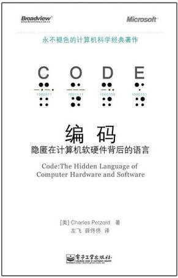

那些年学校从未提及的 C 语言前置知识
前言
毕业近 7 年, 从事 Python 开发 5 年, 为了深入学习操作系统和 Python 语言本身, 如今又重新开始学习 C 语言.
带着 Python 语言的学习和实践经验, 我发现 C 语言其实也并没有当年印象中的那么令人难以理解, 让我不禁想要大呼: 学校误我!(bushi)
想想当年, 非计算机专业, 在对编程语言、操作系统完全没有概念的情况下, 被课程安排牵着做完了所有 C 语言课程的实验, 同时交错着进行汇编实验, 脑子里的问号越来越多, 感觉都来不及思考, 终于 OOM 了.
一开始兴致勃勃, 最终心态崩溃、选择放弃. 当然这是对于我这个学渣来说. 想必学霸、学神们早早地就融会贯通了. 我也不得不感叹, 人和人之间的差距实在是太大了.
现在用自己的方法重新开始学习 C 语言, 希望可以不再像当年那样一头雾水, 也希望能帮助到那些正经历着我当年那种疑惑的同学.
那么在正式开始学习语法之前, 有必要预先对 C 语言有一个宏观的认识, 可以从纵向和横向两个角度来了解:
纵向 —— 了解 C 语言的诞生和发展;
横向 —— 对比当下与 C 语言并存的其他常见语言, 认识 C 在其中的位置与特点;
一、C 语言的历史与发展
(一) C 语言的诞生
C 语言最初被创造出来, 主要是为了用于 Unix 系统的开发.
最初的 Unix 系统运行在 PDP-7 小型计算机上, 是由 Dennis Ritchie 和 Ken Thompson 使用汇编语言(Assembly Language) 开发的.
他们希望将 Unix 系统移植到后来的 PDP-11 小型计算机上, 并且最初的 PDP-11 版本 Unix 仍然是使用汇编语言开发的.
但是 Ken Thompson 希望有一种编程语言可以用来为这个新平台开发工具.
最初, 他尝试编写一个 Fortran 语言的编译器, 但是很快就放弃了这个想法. 取而代之的是, 他创造了一个精简版本的(cut-down version) BCPL 系统编程语言, 将其称之为 B 语言.
就像 BCPL 一样, B 语言有一个自举(bootstraping)的编译器, 可以使其更方便地移植到新平台.
然而, 最终只有很少的工具使用 B 语言实现. 因为它(的运行速度)太慢了, 并且不能很好的利用 PDP-11 的特性.
1971 年, Dennis Ritchie 开始优化 B 语言以便充分利用 PDP-11 相较之前机型更强的性能. 一个典型的新增功能就是字符类型(character type). 他将改进后的语言称为”New B”(NB).
Thompson 开始使用 NB 编写 Unix 内核, 他的需求也为这项语言的发展指明了方向.
一直到 1972 年, 这期间, 更多的类型被添加到 NB 语言当中, 比如 int 和 char 数组、指针、所有这些类型的数组等等.
后来编译器被重新编写, 这种语言被重新命名为 “C”.
C 语言的编译器以及一些使用 C 语言开发的工具被包含进了第二个版本的 Unix 系统.
在 1973 年 11 月 发布的 Unix 第四个版本, 内核已经广泛使用了 C 重新实现. 此时的 C 已经获得了像 struct 结构体类型这样的强大特性.
概括来说, 在 C 语言的诞生过程中, 经历了 BCPL -> B -> NB -> C 这样几个阶段.
(二) C 语言标准(standard)的发展
K&R C
1978 年, Brian Kernighan 和 Dennis Ritchie 出版了第一版的《The C Programming Language》, 这本书后来被 C 开发者称为 “K&R”.
此时的 C 语言还没有被权威机构进行标准化. 这时的 C 语言又被称作 “K&R C”, 由于是 1978 年发布的, 又被称作 “C78”.
ANSI C 和 ISO C
随着 C 越来越受欢迎, 在十九世纪七八十年代期间, C 语言出现了用于大型机、小型机和微型机的多种不同实现, 包括 IBM 的 PC 机.
1983 年, 美国国家标准协会(American National Standards Institute, ANSI)成立了委员会, 用来建立 C 语言的标准规范.
最终在 1989 年, C 语言标准被批准, 这个版本的 C 语言通常被称为 “ANSI C”、”Standard C” 或者 “C89”.
1990 年, ANSI C 的标准被国际标准化组织(International Organization for Standardization, ISO)采纳, 有时也被称为”C90”.
所以 “ANSI C”、”C89” 和 “C90” 指的都是同一版本的 C 语言.
后续版本的 C 语言标准
随着之后 C 语言标准又被多次修订, 后续的版本又有:
- C99 (1999 年发布)
- C11 (2011 年 12 月 08 日发布)
- C17 (2018 年 06 月发布, 又称 C18, C17 是非正式的名称)
- C2x (预计在 2023 年表决, 届时会被称为 C23)
另外, 由于历史原因, 嵌入式系统 C 编程为了支持各种特殊的特性, 需要非标准化的扩展.
2008 年, C 标准委员会针对 “Embedded C“ 发布了 技术报告, 为这些实现提供了一个共用的标准.
二、编程语言的意义
(一) 编程语言与操作系统的关系
参考 Wikipedia - Operating System 的定义和图示:

操作系统为用户提供了管理和控制硬件以及应用软件的功能.
常见的编程语言例如 Python、Java、Golang、JavaScript 都是工作在 Application 应用软件这一层. 通过操作系统提供的 API —— C Library 的函数以及 System Call 系统调用 —— 实现和操作系统的交流和对其的控制.
而相比之下 C 有些特殊, 因为如 Linux 系统本身就是由 C 编写的, C 即可以用于操作系统层的开发工作, 又可以用于应用软件层的开发工作.
由于操作系统提供的系统调用 API 是一个有限的集合, 因此不论何种编程语言, 底层的基础可用功能都是有限的, 只是在语言本身的 Runtime 或解释器层面实现了各种不同的高级特性.
如果能对操作系统的 API 有一个系统性的认识, 那么学习不同编程语言时的陌生感也就弱了很多, 对语言特性的学习也就更加容易了.
笔者是通过 《The Linux Programming Interface》 这本书建立起对操作系统 API 的系统性认识的, 推荐给各位有兴趣的同学
如果各位同学、大佬有其他推荐, 也希望可以推荐给笔者进行进一步地学习
(二) C 语言和其他编程语言的关系
类型系统与内存管理方式对比
| C | Golang | Java | Python | JavaScript |
|---|---|---|---|---|
| 编译型 | 编译型 | 编译型 | 解释型 | 解释型 |
| 静态 | 静态 | 静态 | 动态 | 动态 |
| 弱类型 | 强类型 | 强类型 | 强类型 | 弱类型 |
| 手动分配内存 | 自动 GC | 自动 GC | 自动 GC | 自动 GC |
关于编程语言类型系统的相关概念, 可以通过 wikipedia - Type System 进行初步了解
大部分的现代编程语言都提供了各种自动机制, 可以使用户在开发过程中不再过分关注内存的分配, 比如动态数组、自动垃圾回收等等.
这降低了开发的门槛, 让开发人员能更容易的写出可以正确运行的代码.
以同是编译型语言的 Golang 和 Java 的垃圾回收机制为例, 自动 GC 减轻了开发者对于内存控制的心智负担, 但是随之而来的是 GC 开销问题, 以及各种针对 GC 的开发技巧和优化方法. 比如主打性能牌的 Golang, 在开发过程中需要关注内存逃逸问题, 而 Java 关注的 GC 优化问题.
C 语言手动管理内存的方式, 一方面确实会给用户带来开发负担, 但另一方面, 对于性能却是有积极作用的.
并且, 如果希望深入理解其他语言的垃圾回收机制和内存管理机制等等, C 语言手动管理内存的方式仍然是有必要进行学习的.
就像 《Effective C》中对 C 语言主旨的描述:
- 相信开发者. 通常来说, C 语言会假定你知道自己在做什么, 并且允许你去做. 当然这并不完全是一件好事(比如, 当你不知道你在做什么的时候).
- 当开发者需要去做什么的时候, C 语言不会阻止你去做. 因为 C 语言是一项系统编程语言, 它可以用来处理各种贴近底层的工作.
- 保持语言小而简. C 语言被设计得足够接近硬件.
- 只提供一种方式来实现一个操作. 这也被认为是一种保护机制.
- 运行速度快, 即使无法保证可移植性. 允许你实现最佳性能的代码是优先级最高的事.而可移植性和安全性, 也完全委托于你, 开发者.
可以见得, C 语言赋予开发者最高的自由度. 同时, 开发者也要自己承担安全性、可移植性等设计上的责任.
这也是 C 语言的魅力所在.
语法和语言实现的关联
很多现代编程语言, 都直接或间接地受到 C 语言的影响. 比如类型系统的设计、数据模型, 以及语法等等.
除了设计上的影响, 还有语言本身实现上的影响, 比如 Python 语言主要版本 Cpython 的解释器, 就是使用 C 语言编写的, Java 语言的 JVM 也是使用 C 语言编写的, Golang 的编译器在实现自举之前, 也是使用 C 实现的. 并且 Python 支持 C Extension 的模式, 可以使用 C 语言扩展 Python 程序的功能. Golang 也可以通过 CGO 实现 C 语言函数的调用.
三、书目推荐
在几年的工作和学习生涯中, 我有幸读到了一本书, 是朋友推荐给我的. 可以说是相见恨晚, 如果我能在大学期间读到这本书, 对我的帮助一定是巨大的.
虽然是在毕业后学习 Python 时才第一次读到这本书, 但它给我的帮助仍然是不可忽视的.

另外, 后续的学习会主要围绕 《Effective C》 和 《Modern C》两本书进行.
《Modern C》的内容主要围绕 C17 标准.
《Effective C》书中没有明确说明使用某个单一版本的标准, 但 Amazon 商品页 的介绍中描述是覆盖到 C17 标准以及有可能的 C2x 特性 (covering the modern C17 Standard as well as potential C2x features).
《The C Programming Language》第二版 ANSI C 内容有些单薄, 可以快速浏览用于基础语法的学习.
围绕书本学习的同时, 也会同步用 C 完成 LeetCode 算法题, 用来进行数据类型和语言基础的练习.